14 面部中三分之一：泪沟
面部泪沟中段
NIAMH CORDUFF AND JANI VAN LOGHEM
14.1 引言
泪沟（TT）是需求量最大的填充剂治疗之一，但由于该区域的解剖结构特点，它被认为是一个高级指征，因为不当的（浅层）羟基磷灰石钙（CaHA）植入可能导致难以治疗的面颊部水肿 [1]。泪沟畸形（TTD）本质上是眶环韧带（ORL）、颧皮韧带（ZCL）以及它们之间解剖层次结构的结果。ORL从眼眶缘的骨膜发出，并附着于眼轮匝肌在睑部和眶部交界处。因此，ORL是一个假性保留韧带，因为它没有从骨膜延伸到皮肤。ZCL从上颌骨的骨膜发出，并附着于其皮肤，使其成为一个真正的保留韧带。在内侧，ZCL的原发点位于ORL下方且平行于ORL。从内眼角开始，它们延伸至略靠眶下孔的上方。在那里，ZCL的原发点发生转向，离开ORL，沿着上颌骨和颧骨的骨骼向外侧和水平方向移动，到达麦格雷戈补片（McGregor's patch）。
在从内眼角到孔的角度之间，我们发现了TTD。皮肤下方是一个几乎不存在的皮下脂肪间隙，位于眼轮匝肌上方。再往下是眶周肌肉下脂肪（SOOF）间隙，然后，在SOOF深层，可以找到一个由两层滑动膜构成的滑行间隙，也称为面颊沟隔或前上颌骨间隙，而在面颊沟隔下方，我们找到了骨膜前脂肪（有时也称为深层SOOF）、骨膜和骨骼。将CaHA植入于面颊沟隔的浅层（甚至在肌肉深层）可能导致面颊部水肿 [2]。然而，通过适当的注射技术可以避免面颊部水肿。这意味着将CaHA深层注射到面颊沟隔下方的骨膜前脂肪中。使用深层平面进行注射，CaHA是TT注射的优良选择，因为该产品不吸水，因此其引起水肿的风险远低于使用透明质酸（HA）填充剂。这一点在Oscar Hevia于2009年发表的一个病例系列研究中得到了很好的记录，他为301名患者进行了注射，仅有2%的病例出现短暂性水肿 [3]。
TTD常伴有深色眼周色素沉着，这源于轮廓缺陷和皮肤质量的变化。轮廓缺陷包括上颌骨发育不全、凹陷的眶下内侧缘以及眶脂肪疝出，这些都会导致阴影形成。同时，皮肤质量的变化，包括高色素沉着和薄而透明的下眼睑皮肤，会加重黑眼圈的外观。在这种情况下，患有深层TT色素沉着的患者即使在成功进行轮廓矫正后，仍可能持续或更明显地出现变色。值得注意的是，由于其独特的流变学和生物刺激作用，研究表明将少量CaHA小心植入到脱垂的TT ORL下方，可以有效地提升和支撑该区域而不会增加过多的体积。此外，用稀释的CaHA（1:5）进行皮下冲洗可改善色素沉着患者的皮肤厚度和柔韧性 [4]。
14.2 安全注意事项
使用针头注射TT时，应注意不要一次团注过量的产品，因为可以通过针头形成的通道回流 [5]。当产品回流到更浅层的组织时，更有可能发生面颊部水肿。Funt描述了一种在避免面颊部水肿的同时使用锐针的良好技术 [1]。
动脉危险包括眶下动脉、角动脉及其分支，以及下缘动脉弓（图14.1）。
14.3 泪沟钝性套管针技术
注射定位，参见图14.2。
-
识别并标记ZCL和ORL的皮肤附着点。请注意这些韧带的浅层附着点低于骨骼原发点。
-
在两个韧带之间标记进入点，以便钝性套管针可以到达TT的内侧面。
-
进行消毒。考虑在进入点进行眶下神经阻滞和局部麻醉。
-
用23G锐针制作一个预孔。
-
使用未稀释的CaHA或标准稀释的CaHA（每1.5 mL CaHA使用0.3 mL 1%利多卡因与肾上腺素 1:200000混合液）和25G、38 mm钝性套管针。
-
将钝性套管针指向内侧TT的方向（图14.3）。
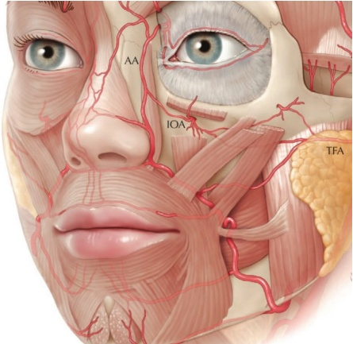
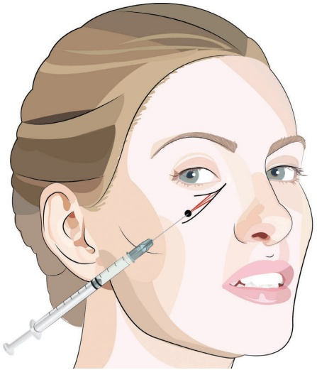
-
用非惯用手将组织抬起至钝性套管针尖前方，并将钝性套管针通过抵抗骨膜的阻力进行操作（图 14.4）。
-
在骨膜上，将钝性套管针向内侧滑动到由两个韧带形成的漏斗中（图 14.5）。
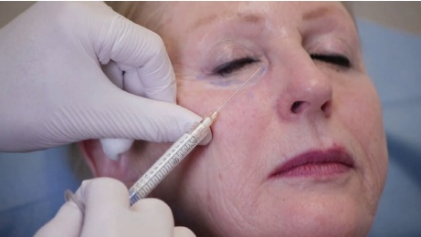
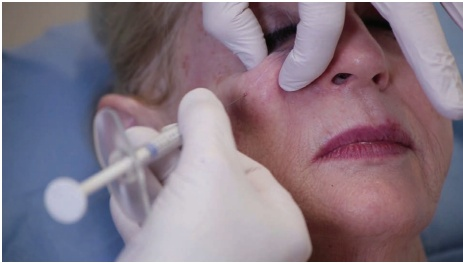
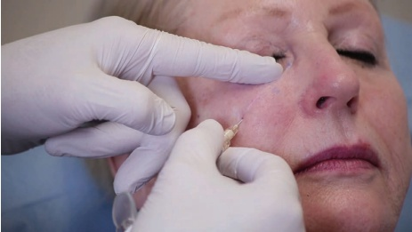
-
在牵拉的同时注射少量产品。
-
塑形并检查。
-
根据需要推进并放置额外的沉积物。切勿过度矫正（图 14.6）。
-
根据需要进行手动按摩以使区域平滑。
14.4 撕裂针技术
注射定位，参见图 14.7。
-
识别并标记ZCL、ORL和眶下孔的皮肤切入点。注意这些韧带的浅表附着点低于骨性起源点。
-
进行消毒。可考虑进行眶下神经阻滞。
-
使用未稀释的羟基磷灰石钙（CaHA）或标准稀释液的CaHA（每1.5 mL CaHA使用0.3 mL 1%利多卡因和生理盐水中的肾上腺素 1:200000），并使用产品配套的27G针。
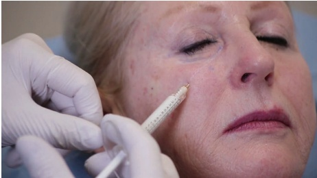
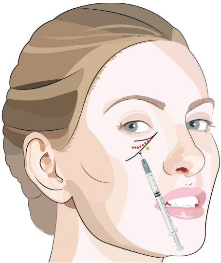
-
抬起颊部，用非惯用手的手指按压眶下缘，以避免意外的眶内注射。
-
使用低于ZCL皮肤附着点的切入点（图 14.8）。
-
将针头斜面朝下，并以 45° 的角度向骨表面推进，缓慢到达骨膜处。
-
轻触骨膜后，分次注射三组小剂量，每组约0.025 mL。少量注射可降低颧部水肿和血管并发症的风险（图 14.9）。
-
拔出针头，将针头重新插入更靠内侧的位置，并重复此步骤。
-
切勿过度修正。
-
根据需要进行手动按摩以使区域平滑。
14.5 皮下稀释 CaHA 技术
-
将0.1 mL CaHA与0.5 mL的1%利多卡因充分混匀。
-
应从外眦下方的一个侧方点皮下穿刺，使用27G钝性套管针到达下眼睑，并将这种高倍稀释液冲洗过整个下眼睑和睑颊交界处。
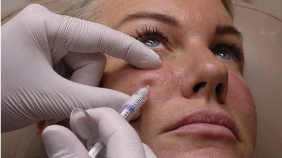
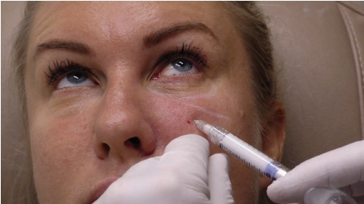
眼周皮下区域。每侧使用的混合物最大量为 0.3 mL。
-
由于该区域皮肤非常薄，整个操作过程中应能看到钝性套管针（cannula）。
-
应将钝性套管针的位置维持在眶环肌筋膜上、真皮层下方，以避免 CaHA 在活动肌肉中结块，从而可能形成结节。
-
为均匀分布 CaHA 洗剂，应用指尖或棉签轻柔按摩该区域。
注意：皮肤质量的改善是一个生物过程，将在接下来的六个月内逐渐发生，在免疫抑制患者、吸烟者以及营养不良或患有慢性健康状况的患者中，效果可能不佳。本治疗适用于皮 Fitzpatrick 肤质 4 型及以上，且伴有与泪沟区（TTD）相关的色素沉着，且皮肤不过度薄的患者。不适用于因透过透明皮肤可见下方肌肉和血管而出现黑眼圈的患者。该区域易瘀伤，患者需要停用所有可能影响血液凝固的药物和补充剂。
14.6 可见性风险（VISIBILITY RISKS）
所有患者（这些患者可能已经涂抹遮瑕膏以掩盖色素沉着）都需要了解此风险，并准备好在可见性问题持续存在期间继续使用遮瑕膏。根据作者的经验，所有可见性并发症最终都已解决，无需进行额外的干预，尽管消退有时可能需要长达 12 个月。作者在 Fitzpatrick 4 型及以上肤质的患者中未遇到任何可见性问题。
存在持续性红斑和 CaHA 晶体透过薄皮肤可见的风险，外观呈奶油状斑块。
另见图 14.10–14.11，以了解术前和术后的效果以及操作技术。
14.7 术后护理（AFTERCARE）
如有必要，可手动按摩该区域以使产品均匀分布。采用向上塑形技术时，产品可能会向内侧推进更多。在接下来的 24 小时内，保持该区域清洁，并用清水轻轻清洗。肿胀可能不均匀，应在一两天内消退。口服抗组胺药有助于将肿胀降至最低。
14.8 实现最佳效果的附加治疗（ADDITIONAL TREATMENTS FOR OPTIMAL RESULTS）
在处理泪沟区时，可考虑进行颧部丰容，因为深层注射 CaHA 或其他
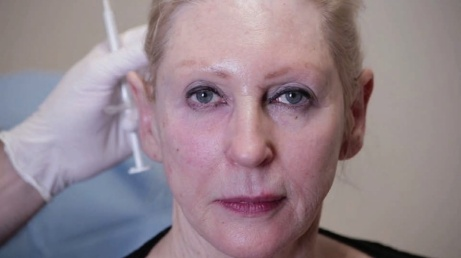
填充剂通常可以减轻泪沟区的凹陷。为了更自然、均匀地矫正眶下区域，可能还需要考虑对颧颊沟进行治疗。
由于泪沟区的皮肤明显比 ZCL 下方的皮肤薄，且因透过该薄皮肤可见青色血管，因此泪沟区的颜色通常比其下方皮肤的颜色更深。为改善皮肤厚度并减轻深色，可考虑使用化学剥脱或其它真皮胶原刺激治疗。此外，术后几天内可局部涂抹含有生长因子的护肤品。
参考文献
[1] D. K. Funt, “Avoiding malar edema during midface/cheek augmentation with dermal fillers,” J Clin Aesthet Dermatol, vol. 4, no. 12, p. 32, Dec. 2011.
[2] D. Funt, T. Pavicic, “Dermal fillers in aesthetics: An overview of adverse events and treatment approaches,” Clin Cosmet Investig Dermatol, vol. 6, pp. 295–316, Dec. 2013.
[3] J. A. J. van Loghem et al., “Cannula versus sharp needle for placement of soft tissue fillers: An observational cadaver study,” Aesthet Surg J, vol. 38, no. 1, pp. 73–88, Dec. 2017.
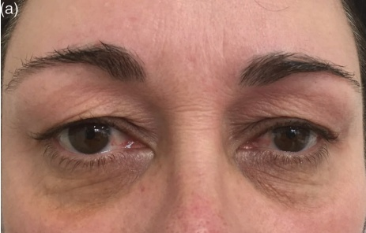
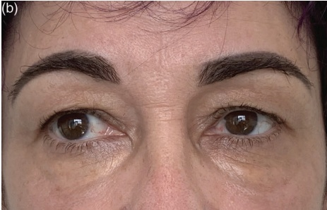
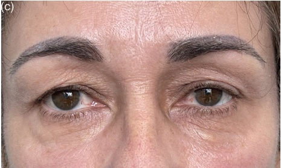
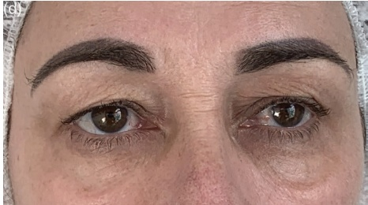
[4] N. Corduff，“使用羟基磷灰石钙进行泪沟畸形相关色素沉着的替代性眼周治疗方案,” Plast Reconstr Surg Glob Open, vol. 8, no. 2, 2020。
[5] O. Hevia，“回顾性研究：羟基磷灰石钙用于眶下区域体积缺失的矫正,” Dermatol Surg, vol. 35, no. 10, pp. 1487–1494, Oct. 2009。